toneIMG_2043 · paper Porcelain 901 plaque: quarter-circle relief, hand-inked squigglepaletteIMG_2043 · all Porcelain 901 plaque: quarter-circle relief, hand-inked squiggle
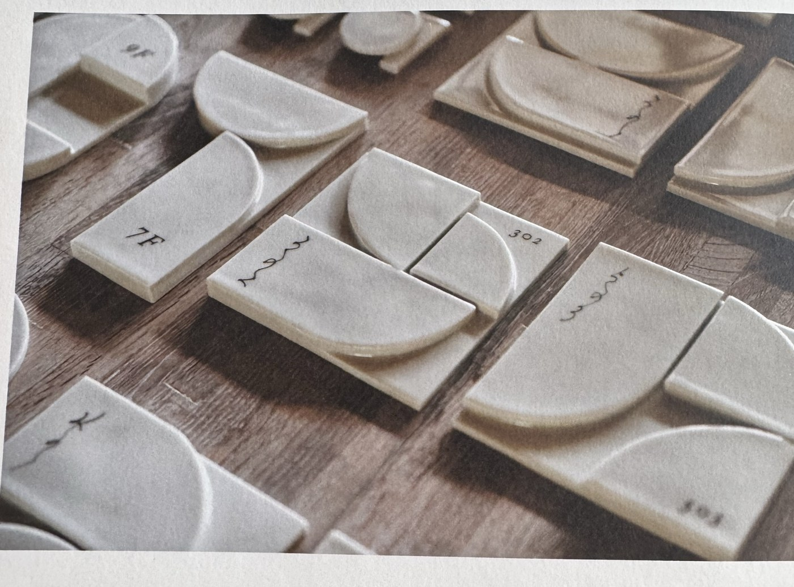
motifIMG_2050 · kutani-plaques Kutani room signs: lines+arcs only, each slightly different — the anchor concept
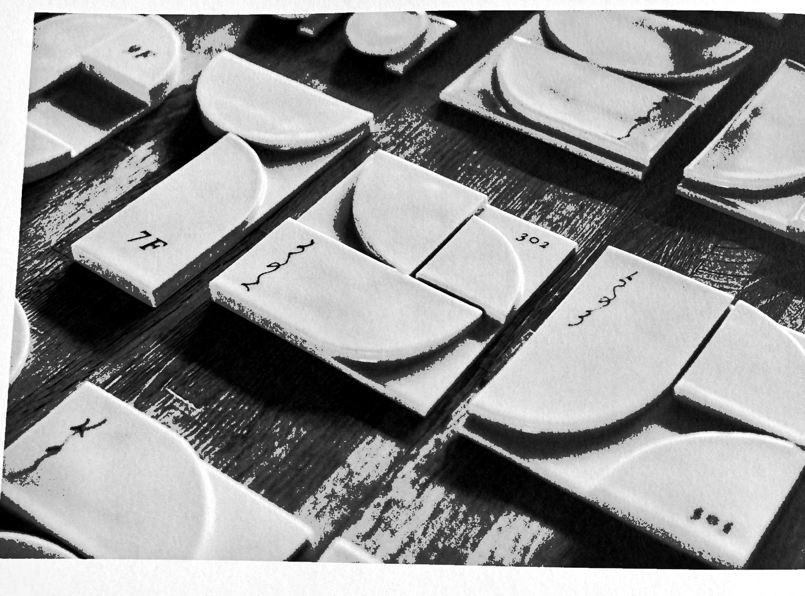
structureIMG_2050 · line-arc-geometry Kutani room signs: lines+arcs only, each slightly different — the anchor concept
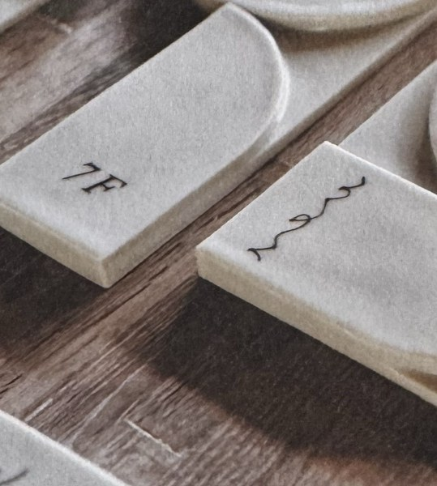
textureIMG_2050 · porcelain Kutani room signs: lines+arcs only, each slightly different — the anchor concept
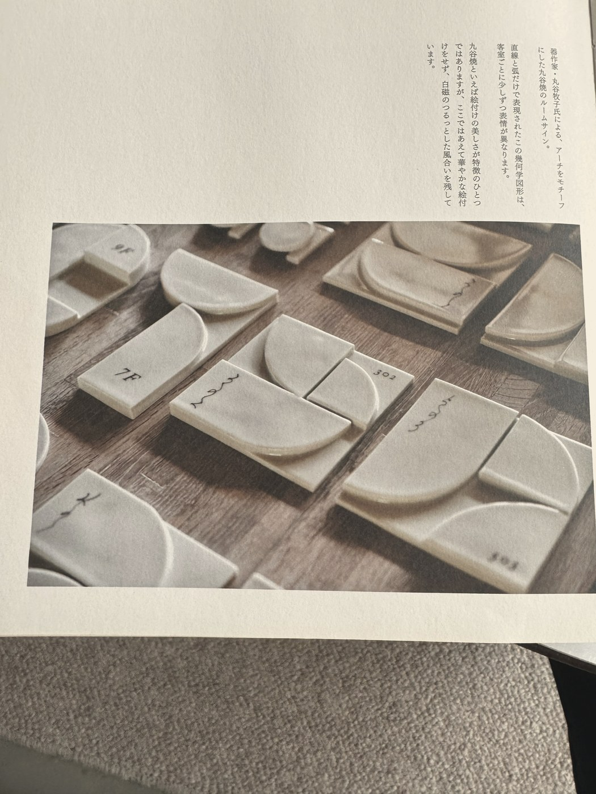
toneIMG_2050 · paper Kutani room signs: lines+arcs only, each slightly different — the anchor conceptpaletteIMG_2050 · all Kutani room signs: lines+arcs only, each slightly different — the anchor conceptpaletteIMG_2050 · porcelain Kutani room signs: lines+arcs only, each slightly different — the anchor concept
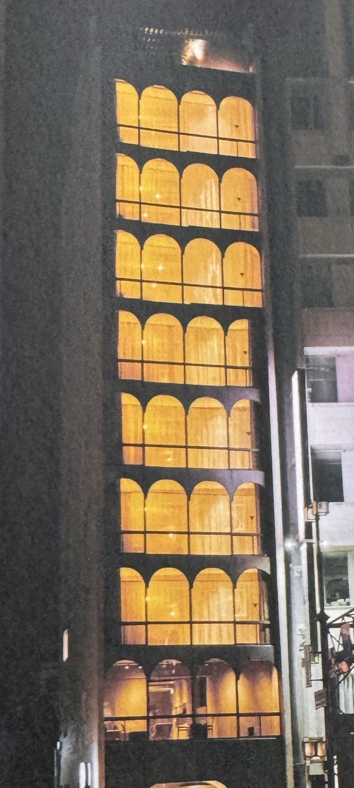
motifIMG_2052 · arch-glow Night arch-window hotel: glowing arcade stack
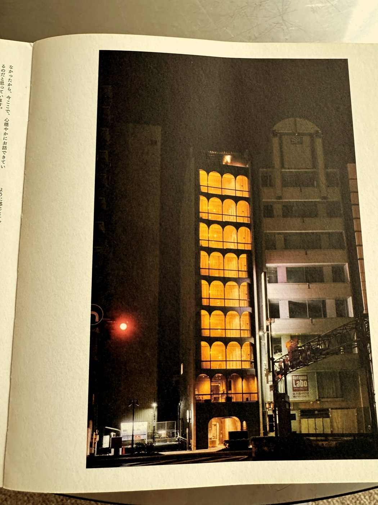
toneIMG_2052 · amber Night arch-window hotel: glowing arcade stackpaletteIMG_2052 · all Night arch-window hotel: glowing arcade stackpaletteIMG_2052 · arch-glow Night arch-window hotel: glowing arcade stack
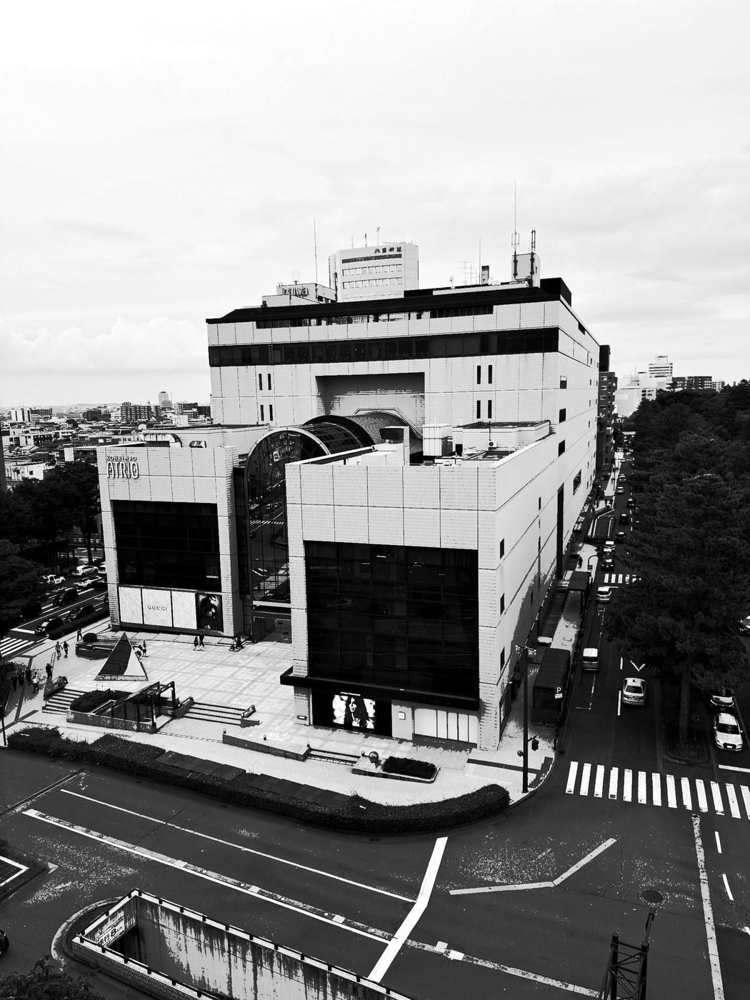
structureIMG_2053 · block-grid Dept store from above: tile grid, barrel vault
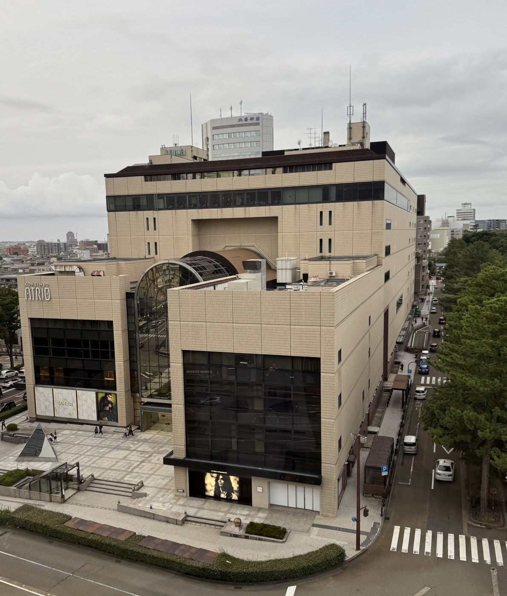
fieldIMG_2053 · massing Dept store from above: tile grid, barrel vaultpaletteIMG_2053 · all Dept store from above: tile grid, barrel vault
motifIMG_2079 · prop-web Web of support poles through branches
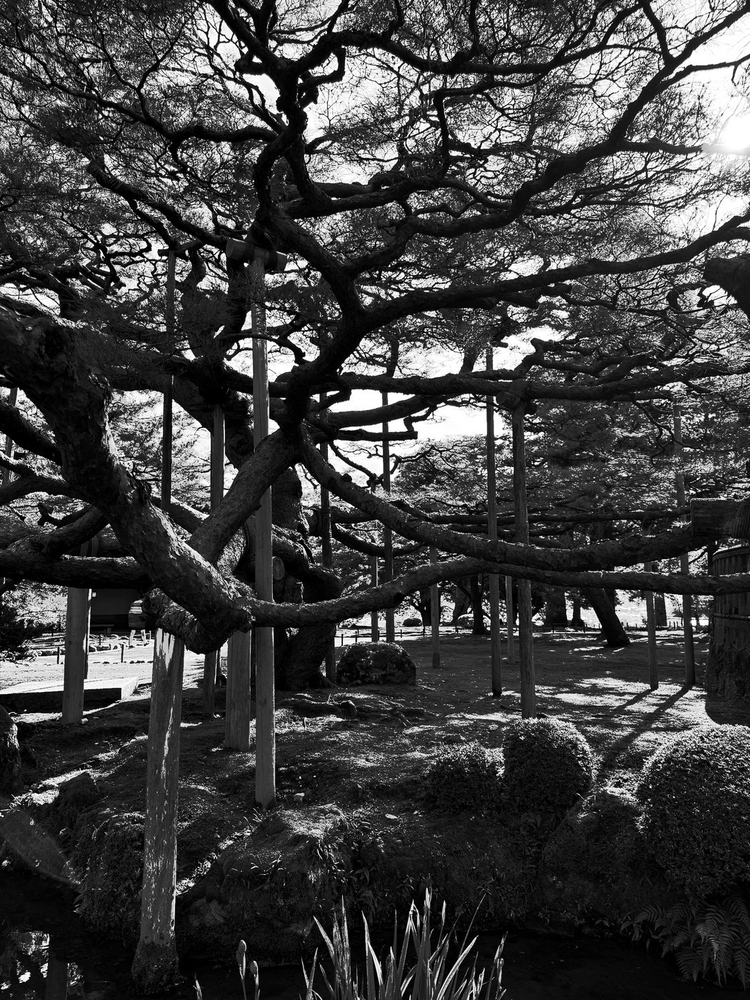
structureIMG_2079 · prop-lines Web of support poles through branchespaletteIMG_2079 · all Web of support poles through branches
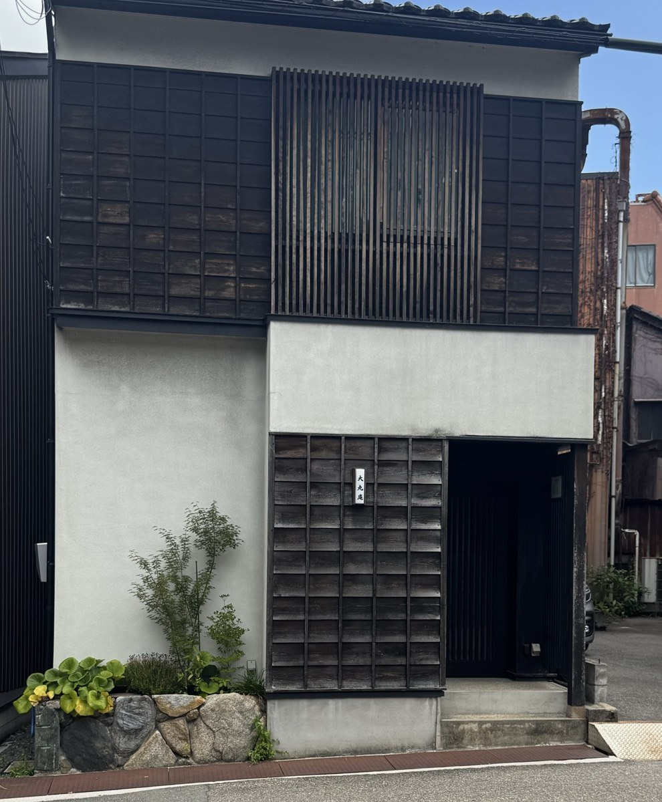
motifIMG_2083 · grid-facades Machiya: multiple slat-grid densities on one facade
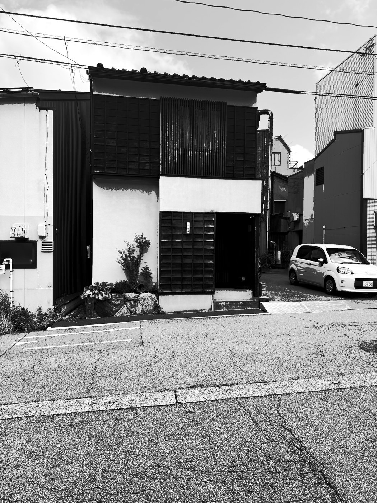
structureIMG_2083 · grid-density Machiya: multiple slat-grid densities on one facadepaletteIMG_2083 · all Machiya: multiple slat-grid densities on one facadepaletteIMG_2083 · slats Machiya: multiple slat-grid densities on one facade
structureIMG_2090 · radial-rhythm Circular canopy with radial timber fins, corten belowpaletteIMG_2090 · all Circular canopy with radial timber fins, corten below
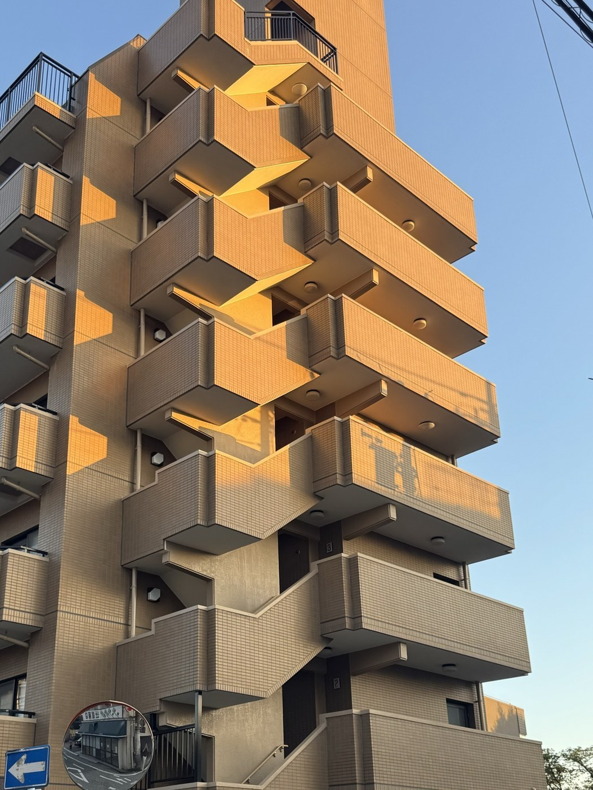
motifIMG_2093 · golden-zigzag Golden-hour zigzag balconies: color moving across modulestoneIMG_2093 · golden Golden-hour zigzag balconies: color moving across modulesstructureIMG_2093 · balcony-zigzag Golden-hour zigzag balconies: color moving across modulespaletteIMG_2093 · all Golden-hour zigzag balconies: color moving across modulespaletteIMG_2093 · golden Golden-hour zigzag balconies: color moving across modulesmotifIMG_2102 · card-grid Hanafuda card grid: collection as displaypaletteIMG_2102 · all Hanafuda card grid: collection as displaypaletteIMG_2102 · cards Hanafuda card grid: collection as displaymotifIMG_2110 · box-grid SMISKI blind-box grid: two-tone boxes, stackedpaletteIMG_2110 · all SMISKI blind-box grid: two-tone boxes, stackedpaletteIMG_2110 · boxes SMISKI blind-box grid: two-tone boxes, stackedmotifIMG_2111 · peek-box Blind-box close: character peeking over box edgepaletteIMG_2111 · all Blind-box close: character peeking over box edge
Line + Arc
Straight lines and circle segments are a complete vocabulary. — 45 extractions
motifIMG_2032 · timber-fins Roofline of irregular vertical timber finsstructureIMG_2032 · fin-rhythm Roofline of irregular vertical timber finspaletteIMG_2032 · all Roofline of irregular vertical timber finsmotifIMG_2036 · curved-balconies White apartments: semicircular balcony modulesstructureIMG_2036 · balcony-grid White apartments: semicircular balcony modulespaletteIMG_2036 · all White apartments: semicircular balcony modulesmotifIMG_2038 · disc-rail Uniform white disc signs on slat fence with ivypaletteIMG_2038 · all Uniform white disc signs on slat fence with ivymotifIMG_2042 · directory-etch Etched floor directory: building section as arch modulesstructureIMG_2042 · etch-lines Etched floor directory: building section as arch modulespaletteIMG_2042 · all Etched floor directory: building section as arch modulesmotifIMG_2043 · porcelain-901 Porcelain 901 plaque: quarter-circle relief, hand-inked squiggletoneIMG_2043 · paper Porcelain 901 plaque: quarter-circle relief, hand-inked squigglepaletteIMG_2043 · all Porcelain 901 plaque: quarter-circle relief, hand-inked squigglemotifIMG_2044 · arch-vignettes Hotel book page: arch-framed vignettes, letterpress italictoneIMG_2044 · paper Hotel book page: arch-framed vignettes, letterpress italicpaletteIMG_2044 · all Hotel book page: arch-framed vignettes, letterpress italicmotifIMG_2045 · distill-diagram Distillation diagram: thin-line technical drawingstructureIMG_2045 · diagram-lines Distillation diagram: thin-line technical drawingpaletteIMG_2045 · all Distillation diagram: thin-line technical drawingmotifIMG_2047 · geo-diagram Circular-economy diagram from semicircles/triangles/archesstructureIMG_2047 · geo-lines Circular-economy diagram from semicircles/triangles/archespaletteIMG_2047 · all Circular-economy diagram from semicircles/triangles/archesmotifIMG_2050 · kutani-plaques Kutani room signs: lines+arcs only, each slightly different — the anchor conceptstructureIMG_2050 · line-arc-geometry Kutani room signs: lines+arcs only, each slightly different — the anchor concepttextureIMG_2050 · porcelain Kutani room signs: lines+arcs only, each slightly different — the anchor concepttoneIMG_2050 · paper Kutani room signs: lines+arcs only, each slightly different — the anchor conceptpaletteIMG_2050 · all Kutani room signs: lines+arcs only, each slightly different — the anchor conceptpaletteIMG_2050 · porcelain Kutani room signs: lines+arcs only, each slightly different — the anchor conceptmotifIMG_2052 · arch-glow Night arch-window hotel: glowing arcade stacktoneIMG_2052 · amber Night arch-window hotel: glowing arcade stackpaletteIMG_2052 · all Night arch-window hotel: glowing arcade stackpaletteIMG_2052 · arch-glow Night arch-window hotel: glowing arcade stackmotifIMG_2080 · round-stele Round engraved stone monument in rough rockstextureIMG_2080 · rock Round engraved stone monument in rough rockspaletteIMG_2080 · all Round engraved stone monument in rough rocksmotifIMG_2090 · radial-fins Circular canopy with radial timber fins, corten belowstructureIMG_2090 · radial-rhythm Circular canopy with radial timber fins, corten belowpaletteIMG_2090 · all Circular canopy with radial timber fins, corten belowmotifIMG_2098 · dome-canopy Station: glass dome canopy + crosswalk stripesfieldIMG_2098 · plaza-graphic Station: glass dome canopy + crosswalk stripespaletteIMG_2098 · all Station: glass dome canopy + crosswalk stripesmotifIMG_2113 · hose-ring Haneda fire hydrant: function displayed like a productstructureIMG_2113 · ring-graphic Haneda fire hydrant: function displayed like a productpaletteIMG_2113 · all Haneda fire hydrant: function displayed like a product
Light as the Animator
Things don't get highlighted; they ignite. — 39 extractions
motifIMG_2041 · table-scene Interior: concrete + oak table + plants, warm calmtoneIMG_2041 · amber Interior: concrete + oak table + plants, warm calmpaletteIMG_2041 · all Interior: concrete + oak table + plants, warm calmmotifIMG_2048 · milky-teal 浮遊 calligraphy over milky teal watermotifIMG_2048 · calligraphy 浮遊 calligraphy over milky teal waterpaletteIMG_2048 · all 浮遊 calligraphy over milky teal watermotifIMG_2049 · lamp-point Oil lamps: warm points in darknesstoneIMG_2049 · amber Oil lamps: warm points in darknesspaletteIMG_2049 · all Oil lamps: warm points in darknesspaletteIMG_2049 · lamp Oil lamps: warm points in darknesstoneIMG_2051 · amber Textured panels spotlit on dark wallpaletteIMG_2051 · all Textured panels spotlit on dark wallmotifIMG_2052 · arch-glow Night arch-window hotel: glowing arcade stacktoneIMG_2052 · amber Night arch-window hotel: glowing arcade stackpaletteIMG_2052 · all Night arch-window hotel: glowing arcade stackpaletteIMG_2052 · arch-glow Night arch-window hotel: glowing arcade stackfieldIMG_2058 · warm-clutter Bar interior: organized clutter, one glowing lamptoneIMG_2058 · amber Bar interior: organized clutter, one glowing lamppaletteIMG_2058 · all Bar interior: organized clutter, one glowing lampmotifIMG_2062 · lit-tower Night street: lit stair tower over machiyatoneIMG_2062 · amber Night street: lit stair tower over machiyapaletteIMG_2062 · all Night street: lit stair tower over machiyapaletteIMG_2062 · night Night street: lit stair tower over machiyamotifIMG_2063 · zigzag-stack Zigzag stair stacks glowing — repetition + internal lightstructureIMG_2063 · zigzag-rhythm Zigzag stair stacks glowing — repetition + internal lighttoneIMG_2063 · amber Zigzag stair stacks glowing — repetition + internal lightpaletteIMG_2063 · all Zigzag stair stacks glowing — repetition + internal lightmotifIMG_2078 · silhouette Statue silhouette against bright cloudtoneIMG_2078 · ink Statue silhouette against bright cloudpaletteIMG_2078 · all Statue silhouette against bright cloudmotifIMG_2093 · golden-zigzag Golden-hour zigzag balconies: color moving across modulestoneIMG_2093 · golden Golden-hour zigzag balconies: color moving across modulesstructureIMG_2093 · balcony-zigzag Golden-hour zigzag balconies: color moving across modulespaletteIMG_2093 · all Golden-hour zigzag balconies: color moving across modulespaletteIMG_2093 · golden Golden-hour zigzag balconies: color moving across modulesmotifIMG_2095 · warm-windows Night: warm window rectangles over ryokan rooftoneIMG_2095 · amber Night: warm window rectangles over ryokan roofpaletteIMG_2095 · all Night: warm window rectangles over ryokan roofpaletteIMG_2095 · warm-win Night: warm window rectangles over ryokan roof
Visible Care
Support structures shown proudly, not hidden. — 24 extractions
motifIMG_2037 · lattice-volume Diagonal timber lattice building: structure as facadetextureIMG_2037 · lattice-weave Diagonal timber lattice building: structure as facadestructureIMG_2037 · weave Diagonal timber lattice building: structure as facadepaletteIMG_2037 · all Diagonal timber lattice building: structure as facadefieldIMG_2073 · garden Kenrokuen: composed nature, moss groundpaletteIMG_2073 · all Kenrokuen: composed nature, moss groundfieldIMG_2074 · roof-pine Teahouse roofline interlocking with pinepaletteIMG_2074 · all Teahouse roofline interlocking with pinemotifIMG_2075 · propped-pine Pine held by timber props — care made visiblepaletteIMG_2075 · all Pine held by timber props — care made visiblemotifIMG_2076 · root-flare Exposed root flare + propspaletteIMG_2076 · all Exposed root flare + propsmotifIMG_2079 · prop-web Web of support poles through branchesstructureIMG_2079 · prop-lines Web of support poles through branchespaletteIMG_2079 · all Web of support poles through branchesmotifIMG_2082 · prop-tripod Prop tripod meeting trunk overheadstructureIMG_2082 · tripod-lines Prop tripod meeting trunk overheadpaletteIMG_2082 · all Prop tripod meeting trunk overheadmotifIMG_2088 · plaque-pair Preservation plaques: bronze + verdigris in wood framespaletteIMG_2088 · all Preservation plaques: bronze + verdigris in wood framespaletteIMG_2088 · patina Preservation plaques: bronze + verdigris in wood framesmotifIMG_2113 · hose-ring Haneda fire hydrant: function displayed like a productstructureIMG_2113 · ring-graphic Haneda fire hydrant: function displayed like a productpaletteIMG_2113 · all Haneda fire hydrant: function displayed like a product
Paper Calm
Cream grounds, sparse color events, letterpress quiet. — 41 extractions
motifIMG_2023 · flight-stamp Craft beer menu: stamp-bordered boxes, engraved flight illustrationsmotifIMG_2023 · merry-go-round Craft beer menu: stamp-bordered boxes, engraved flight illustrationstoneIMG_2023 · paper Craft beer menu: stamp-bordered boxes, engraved flight illustrationspaletteIMG_2023 · all Craft beer menu: stamp-bordered boxes, engraved flight illustrationsmotifIMG_2024 · topping-pills Tonkatsu menu: topping pills, colored-pencil illustrationpaletteIMG_2024 · all Tonkatsu menu: topping pills, colored-pencil illustrationmotifIMG_2026 · kurobuta-plate Menu lore block: pink header + hand-drawn set platepaletteIMG_2026 · all Menu lore block: pink header + hand-drawn set platemotifIMG_2029 · color-blocks Photo-book cover: translucent color blocks, obi bandfieldIMG_2029 · cover-composition Photo-book cover: translucent color blocks, obi bandtoneIMG_2029 · paper Photo-book cover: translucent color blocks, obi bandpaletteIMG_2029 · all Photo-book cover: translucent color blocks, obi bandfieldIMG_2040 · plaza Station plaza: canopy line, pastel paving gridpaletteIMG_2040 · all Station plaza: canopy line, pastel paving gridmotifIMG_2041 · table-scene Interior: concrete + oak table + plants, warm calmtoneIMG_2041 · amber Interior: concrete + oak table + plants, warm calmpaletteIMG_2041 · all Interior: concrete + oak table + plants, warm calmmotifIMG_2044 · arch-vignettes Hotel book page: arch-framed vignettes, letterpress italictoneIMG_2044 · paper Hotel book page: arch-framed vignettes, letterpress italicpaletteIMG_2044 · all Hotel book page: arch-framed vignettes, letterpress italicmotifIMG_2045 · distill-diagram Distillation diagram: thin-line technical drawingstructureIMG_2045 · diagram-lines Distillation diagram: thin-line technical drawingpaletteIMG_2045 · all Distillation diagram: thin-line technical drawingfieldIMG_2046 · spread Editorial spread: forest photo, vertical text columnstoneIMG_2046 · paper Editorial spread: forest photo, vertical text columnspaletteIMG_2046 · all Editorial spread: forest photo, vertical text columnsmotifIMG_2048 · milky-teal 浮遊 calligraphy over milky teal watermotifIMG_2048 · calligraphy 浮遊 calligraphy over milky teal waterpaletteIMG_2048 · all 浮遊 calligraphy over milky teal waterfieldIMG_2054 · canopy-haze Park canopy + moon, layered hazepaletteIMG_2054 · all Park canopy + moon, layered hazefieldIMG_2073 · garden Kenrokuen: composed nature, moss groundpaletteIMG_2073 · all Kenrokuen: composed nature, moss groundmotifIMG_2077 · wood-sign Wood sign: vertical calligraphy, four languages, QR in woodpaletteIMG_2077 · all Wood sign: vertical calligraphy, four languages, QR in woodtextureIMG_2089 · plank-gate Samurai-district gate: planks, plaster, leaves on dark stonemotifIMG_2089 · leaf-scatter Samurai-district gate: planks, plaster, leaves on dark stonepaletteIMG_2089 · all Samurai-district gate: planks, plaster, leaves on dark stonemotifIMG_2101 · print Yokai ukiyo-e parody: flat color, red accent flagspaletteIMG_2101 · all Yokai ukiyo-e parody: flat color, red accent flagspaletteIMG_2101 · flags Yokai ukiyo-e parody: flat color, red accent flags
motifIMG_2026 · kurobuta-plate Menu lore block: pink header + hand-drawn set platepaletteIMG_2026 · all Menu lore block: pink header + hand-drawn set platemotifIMG_2033 · spectrum-grid Pleated garment wall: silhouette grid, spectrumpaletteIMG_2033 · all Pleated garment wall: silhouette grid, spectrummotifIMG_2055 · clipboard-row Clipboard menu system: numbered tags, sold-out sticker, neon accentmotifIMG_2055 · neon-overhere Clipboard menu system: numbered tags, sold-out sticker, neon accentpaletteIMG_2055 · all Clipboard menu system: numbered tags, sold-out sticker, neon accentmotifIMG_2057 · hand-sign Hand-painted A-frame: yellow circle, script, mosaic floortextureIMG_2057 · mosaic-floor Hand-painted A-frame: yellow circle, script, mosaic floorpaletteIMG_2057 · all Hand-painted A-frame: yellow circle, script, mosaic floorfieldIMG_2058 · warm-clutter Bar interior: organized clutter, one glowing lamptoneIMG_2058 · amber Bar interior: organized clutter, one glowing lamppaletteIMG_2058 · all Bar interior: organized clutter, one glowing lampmotifIMG_2101 · print Yokai ukiyo-e parody: flat color, red accent flagspaletteIMG_2101 · all Yokai ukiyo-e parody: flat color, red accent flagspaletteIMG_2101 · flags Yokai ukiyo-e parody: flat color, red accent flagsmotifIMG_2102 · card-grid Hanafuda card grid: collection as displaypaletteIMG_2102 · all Hanafuda card grid: collection as displaypaletteIMG_2102 · cards Hanafuda card grid: collection as displayfieldIMG_2103 · shelf Kawaii toy shelf: density with orderpaletteIMG_2103 · all Kawaii toy shelf: density with ordermotifIMG_2104 · kawaii-ui Toy laptop UI: full kawaii design languagepaletteIMG_2104 · all Toy laptop UI: full kawaii design languagepaletteIMG_2104 · kawaii-ui Toy laptop UI: full kawaii design languagepaletteIMG_2105 · all Rilakkuma packaging wallmotifIMG_2106 · lore-cards Character lore sheet: name/role/story per characterpaletteIMG_2106 · all Character lore sheet: name/role/story per characterfieldIMG_2107 · notebook-grid Stationery shelf densitypaletteIMG_2107 · all Stationery shelf densityfieldIMG_2108 · holo-covers Holographic notebook coverspaletteIMG_2108 · all Holographic notebook coversmotifIMG_2110 · box-grid SMISKI blind-box grid: two-tone boxes, stackedpaletteIMG_2110 · all SMISKI blind-box grid: two-tone boxes, stackedpaletteIMG_2110 · boxes SMISKI blind-box grid: two-tone boxes, stackedmotifIMG_2111 · peek-box Blind-box close: character peeking over box edgepaletteIMG_2111 · all Blind-box close: character peeking over box edge
Tactility & Imperfection
Surfaces with hands in their history: grout, glaze, laminate, weathering. — 66 extractions
motifIMG_2024 · topping-pills Tonkatsu menu: topping pills, colored-pencil illustrationpaletteIMG_2024 · all Tonkatsu menu: topping pills, colored-pencil illustrationmotifIMG_2025 · sold-out-sticker Physical SOLD OUT sticker over laminatepaletteIMG_2025 · all Physical SOLD OUT sticker over laminatetextureIMG_2030 · brick-field Brick facade close: grid + louver edgestructureIMG_2030 · facade-grid Brick facade close: grid + louver edgepaletteIMG_2030 · all Brick facade close: grid + louver edgemotifIMG_2037 · lattice-volume Diagonal timber lattice building: structure as facadetextureIMG_2037 · lattice-weave Diagonal timber lattice building: structure as facadestructureIMG_2037 · weave Diagonal timber lattice building: structure as facadepaletteIMG_2037 · all Diagonal timber lattice building: structure as facademotifIMG_2041 · table-scene Interior: concrete + oak table + plants, warm calmtoneIMG_2041 · amber Interior: concrete + oak table + plants, warm calmpaletteIMG_2041 · all Interior: concrete + oak table + plants, warm calmmotifIMG_2043 · porcelain-901 Porcelain 901 plaque: quarter-circle relief, hand-inked squiggletoneIMG_2043 · paper Porcelain 901 plaque: quarter-circle relief, hand-inked squigglepaletteIMG_2043 · all Porcelain 901 plaque: quarter-circle relief, hand-inked squigglemotifIMG_2050 · kutani-plaques Kutani room signs: lines+arcs only, each slightly different — the anchor conceptstructureIMG_2050 · line-arc-geometry Kutani room signs: lines+arcs only, each slightly different — the anchor concepttextureIMG_2050 · porcelain Kutani room signs: lines+arcs only, each slightly different — the anchor concepttoneIMG_2050 · paper Kutani room signs: lines+arcs only, each slightly different — the anchor conceptpaletteIMG_2050 · all Kutani room signs: lines+arcs only, each slightly different — the anchor conceptpaletteIMG_2050 · porcelain Kutani room signs: lines+arcs only, each slightly different — the anchor concepttoneIMG_2051 · amber Textured panels spotlit on dark wallpaletteIMG_2051 · all Textured panels spotlit on dark wallmotifIMG_2056 · window-box Extruded brown window boxes on speckled stonetextureIMG_2056 · speckled-stone Extruded brown window boxes on speckled stonestructureIMG_2056 · box-rhythm Extruded brown window boxes on speckled stonepaletteIMG_2056 · all Extruded brown window boxes on speckled stonemotifIMG_2057 · hand-sign Hand-painted A-frame: yellow circle, script, mosaic floortextureIMG_2057 · mosaic-floor Hand-painted A-frame: yellow circle, script, mosaic floorpaletteIMG_2057 · all Hand-painted A-frame: yellow circle, script, mosaic floormotifIMG_2060 · maker-tile Handmade tiles, one carrying the etched logotextureIMG_2060 · glaze-tiles Handmade tiles, one carrying the etched logopaletteIMG_2060 · all Handmade tiles, one carrying the etched logopaletteIMG_2060 · tile Handmade tiles, one carrying the etched logotextureIMG_2061 · mosaic-band Mosaic band meets oak counter: glaze × graintextureIMG_2061 · oak-grain Mosaic band meets oak counter: glaze × grainmotifIMG_2061 · junction Mosaic band meets oak counter: glaze × grainpaletteIMG_2061 · all Mosaic band meets oak counter: glaze × grainpaletteIMG_2061 · oak Mosaic band meets oak counter: glaze × grainmotifIMG_2076 · root-flare Exposed root flare + propspaletteIMG_2076 · all Exposed root flare + propsmotifIMG_2080 · round-stele Round engraved stone monument in rough rockstextureIMG_2080 · rock Round engraved stone monument in rough rockspaletteIMG_2080 · all Round engraved stone monument in rough rocksmotifIMG_2083 · grid-facades Machiya: multiple slat-grid densities on one facadestructureIMG_2083 · grid-density Machiya: multiple slat-grid densities on one facadepaletteIMG_2083 · all Machiya: multiple slat-grid densities on one facadepaletteIMG_2083 · slats Machiya: multiple slat-grid densities on one facademotifIMG_2086 · lattice-window Machiya close: lattice window, weathered plankstextureIMG_2086 · weathered-planks Machiya close: lattice window, weathered planksstructureIMG_2086 · plank-rhythm Machiya close: lattice window, weathered plankspaletteIMG_2086 · all Machiya close: lattice window, weathered planksmotifIMG_2088 · plaque-pair Preservation plaques: bronze + verdigris in wood framespaletteIMG_2088 · all Preservation plaques: bronze + verdigris in wood framespaletteIMG_2088 · patina Preservation plaques: bronze + verdigris in wood framestextureIMG_2089 · plank-gate Samurai-district gate: planks, plaster, leaves on dark stonemotifIMG_2089 · leaf-scatter Samurai-district gate: planks, plaster, leaves on dark stonepaletteIMG_2089 · all Samurai-district gate: planks, plaster, leaves on dark stonetextureIMG_2091 · stucco Navy slats vs rough stucco, rusted railmotifIMG_2091 · slat-junction Navy slats vs rough stucco, rusted railpaletteIMG_2091 · all Navy slats vs rough stucco, rusted railmotifIMG_2092 · red-door Red door as the single saturated accentpaletteIMG_2092 · all Red door as the single saturated accentpaletteIMG_2092 · red-door Red door as the single saturated accent
Signage as System
One shape, many tenants; numbered clipboards; unified marks. — 18 extractions
motifIMG_2038 · disc-rail Uniform white disc signs on slat fence with ivypaletteIMG_2038 · all Uniform white disc signs on slat fence with ivymotifIMG_2042 · directory-etch Etched floor directory: building section as arch modulesstructureIMG_2042 · etch-lines Etched floor directory: building section as arch modulespaletteIMG_2042 · all Etched floor directory: building section as arch modulesmotifIMG_2055 · clipboard-row Clipboard menu system: numbered tags, sold-out sticker, neon accentmotifIMG_2055 · neon-overhere Clipboard menu system: numbered tags, sold-out sticker, neon accentpaletteIMG_2055 · all Clipboard menu system: numbered tags, sold-out sticker, neon accentmotifIMG_2077 · wood-sign Wood sign: vertical calligraphy, four languages, QR in woodpaletteIMG_2077 · all Wood sign: vertical calligraphy, four languages, QR in woodmotifIMG_2088 · plaque-pair Preservation plaques: bronze + verdigris in wood framespaletteIMG_2088 · all Preservation plaques: bronze + verdigris in wood framespaletteIMG_2088 · patina Preservation plaques: bronze + verdigris in wood framesmotifIMG_2106 · lore-cards Character lore sheet: name/role/story per characterpaletteIMG_2106 · all Character lore sheet: name/role/story per charactermotifIMG_2113 · hose-ring Haneda fire hydrant: function displayed like a productstructureIMG_2113 · ring-graphic Haneda fire hydrant: function displayed like a productpaletteIMG_2113 · all Haneda fire hydrant: function displayed like a product